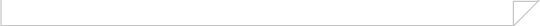

TOP >> 採用情報 >> 採用責任者からのメッセージ
「就職活動をされる大学生・大学院生の皆さんへ」
|
|||||
|  | |||||
当社は、お客様のご要望に応じて、〝グラム単位の小さな「鋳物」〟から〝トン単位の大きな｢鋳物｣〟まで、幅広い分野の製品を、日本国内はもとより広く世界の市場に提供している｢ものづくり｣会社です。たとえば、「新幹線が安全に走行するための分岐レール」、この製品は、みなさんの安心かつ快適な旅行を支えています。また、「原子力発電所に設置される特殊なポンプやバルブ製品」や「自動車の燃費効率を高めるためのターボチャージャー部品」、これらは、地球温暖化に悪影響を与えると言われているＣＯ２削減に貢献しています。いずれも、環境関連分野の製品であり、お客さまからの期待は非常に高いものです。
このような市場環境に貢献するため、私たちは、会社の基本方針の中に、｢〝Ｅ〟企業｣という言葉を旗印として掲げています。環境(Ecology)貢献という観点にたった言葉ですが、また同時に、従業員満足度(Employment)を高めること、教育(Education)に力を入れることにより優秀な(Excellent)人材を育成することなどを念頭においた言葉でもあります。
今、市場は世界的な規模で大きく変化しています。そして、私たちは、その変化に迅速に対応していくことを求められています。自動車分野の環境規制による需要増加に対して、迅速に増産対応することあるいは、新たな環境分野に対応するための製品開発をすることなど、求められている課題はたくさんあります。 そのために、私たちは、新たな時代に向かって共に協力し、成長してくれる人材を欲しています。私たちが期待しているのは、ともに歩んでくれる人材ですが、特殊な人材ということではありません。｢普通の会社｣として｢普通の人材｣を求めています。
｢普通の人材｣として、みなさんに期待することろは、以下に記すように、ごく基本的なことです。
｢社会人としての意識を持つこと｣
〝意識を持つ〟ということが大事です。
会社員となって、社会の一員になったときから、みなさんは、プロフェッショナルです。ボランティアではなく、きちんと対価をもらって、会社や社会に貢献していくことがスタートします。当たり前のことですが、成果はそう簡単に出るものではありません。しかし、〝意識を持つ〟ということが自分を、そしてまわりの人々をも変えていくことにつながります。
興味を持って対応してもらうこと
マンネリになってしまうと、その時点で成長はありません。いろいろなことに興味を持ってもらうということは、発見や成長のきっかけになります。〝好きこそものの上手なれ〟ということわざがある通りです。当社の場合、ものづくりに興味を持ってもらえれば、申し分ありませんが、どんなことにも興味を持てる人は大歓迎です。
人との関係を大事にしてくれること
一番、基本的なことです。
会社に限らず、社会を構成しているのは〝人〟ですから、仕事をする上でもプライベートでも人との関係を抜きには語れません。電子端末のツールが多様化して大変便利な時代になっていますが、重要な場面では人と人の確認が必要ですし、そのためには普段からの関係が非常に重要です。
人間関係を大事にしてくれる人を私たちも大事にしたいと思います。
私たちは、会社の中で、〝求められる人材像とは？〟というアンケートを実施しました。その結果、どのような層においても、求められる資質というのはごく基本的なことなのだということがわかりました。
就職活動をなされているみなさんへも求めることも同じです。ごく｢普通の会社｣が、ごく｢普通の人材｣を求めていますが、市場からの期待は大きいものがあります。ぜひ、みなさんと一緒にその期待に大いに貢献していきたいものです。
ありがとうございました。